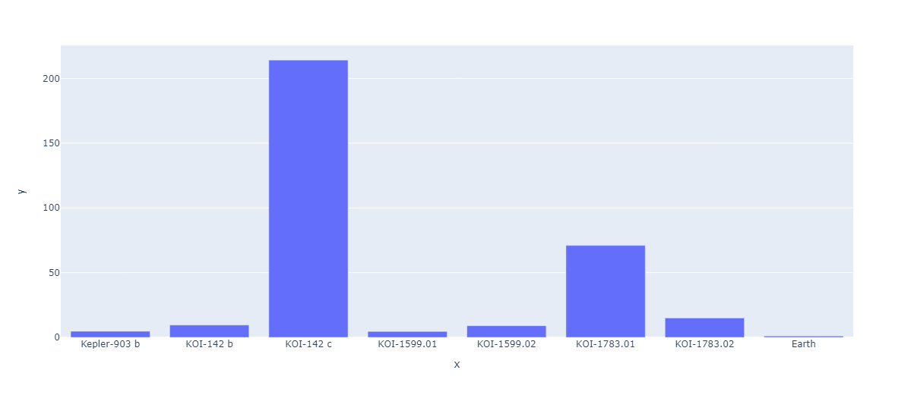
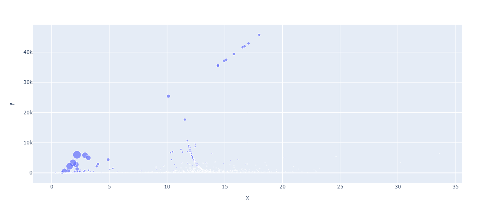
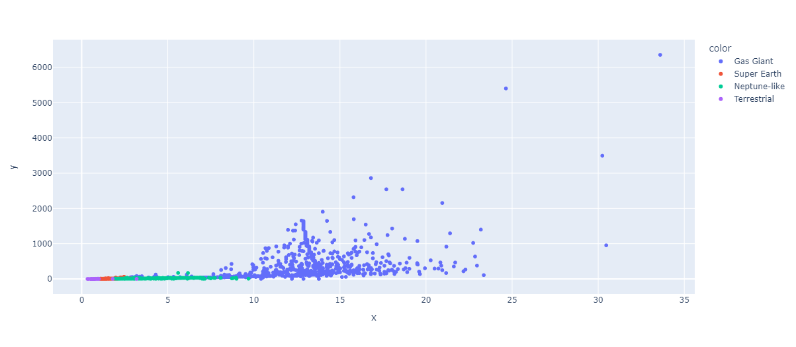
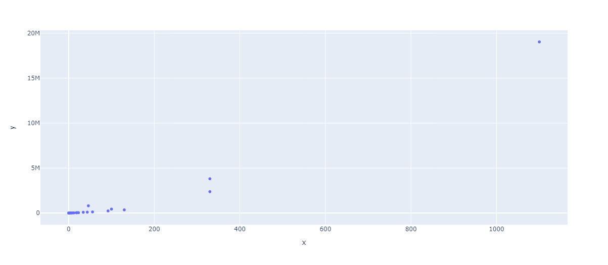

PlanetWolf irá mostrar algumas informações sobre planetas, descoberto pelo desenvolvedor
Sistema Planetário
O maior sistema solar: KOI-351
A quantidade de planetas = 8
Foram analisadas as massas desse planetas e fizemos um gráfico abaixo para mostrar nossa analise

Também analismos as gravidades diferentes de cada planeta
Observe o gráfico

Você vê as bolinhas azuls cada vez mais grande? Quer dizer que a gravidade do planeta é grande!
Agora os tipos de planeta
Antes de continuar, vale mencionar que temos 4 tipos de planetas sendo eles:
Terrestre, Gigante Gasoso, Tipo Netuno e Super Terra
Os planetas que humanos podem vistar é Terrestre e Super Terra
Confira o gráfico!

Outra coisa, não podemos esqueçer das orbitas do KO!-351!
As orbitas foram analisadas para saber a idade velocidade do planeta, como está no gráfico abaixo
